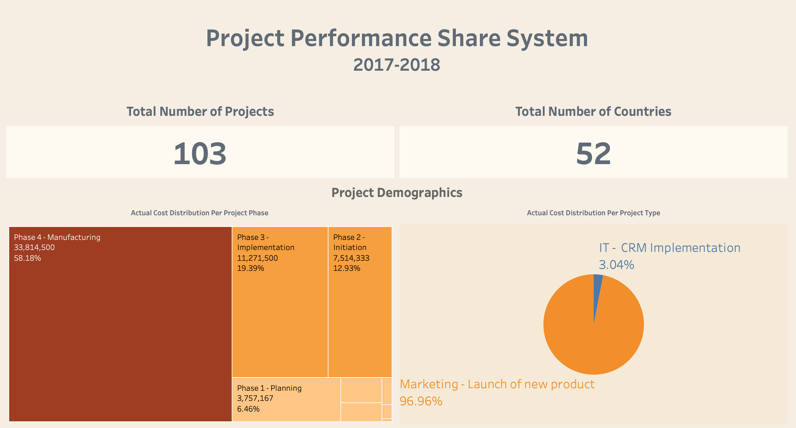
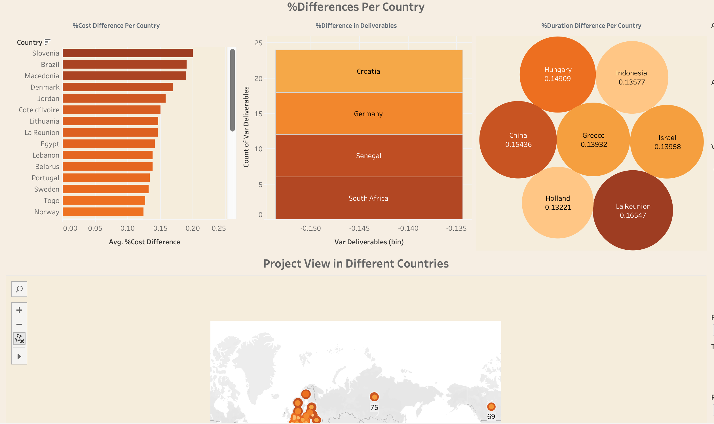
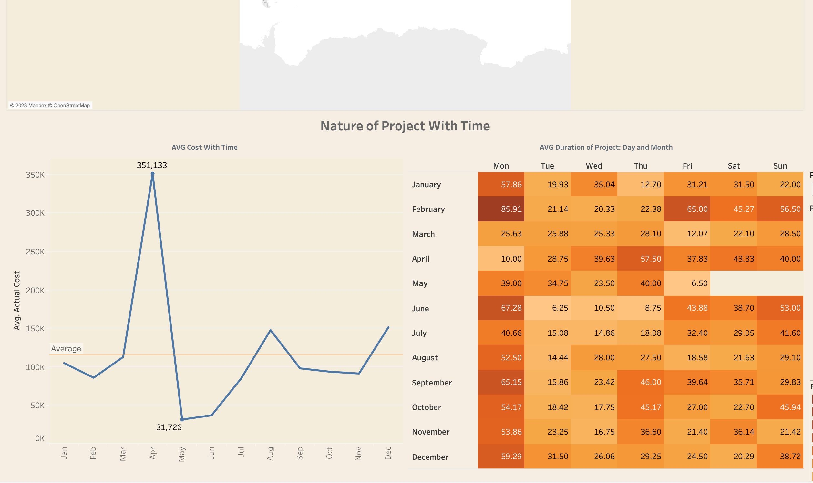

Dental Pharma
Projet conducted as a Data analyst at Dental Pharma, Inc., a company that manufactures and markets pharmaceutical products, particularly for dental use.
Dental Pharma, Inc. has a global presence, and the management wants to standardize the monitoring of various projects within the company.
The goal is to clarify which data they need to track to make better decisions.
Dashboard requirements- International presence
- 4 regions:
- Western Europe,
- Central/Eastern Europe-Middle East-Africa,
- North and Latin America,
- Asia Pacific
- 4 regions:
- There are four phases for marketing projects
- Planning
- Initiation
- Implementation
- Manufacturing
- There are six phases for IT projects:
- Initiation
- Preparation
- Development
- Testing
- Deployment
- Post deployment
- Several users with different levels of responsibility and needs:
- The General Managers, who decide whether to halt or proceed with projects. To do this, they need to be alerted when there are significant performance gaps for projects. They also need to be able to monitor the overall performance of all projects.
- Regional Managers who intervene with Country Managers intheir region if there are performance gaps on projects. They need to be alerted regarding projects in their regions and need to be able to monitor them.
- Country Managers who take corrective action for projects falling under their responsibility. To do this, they need to be able to view indicators for projects in their country.
- Activity is guided by three key “Project Portfolio” indicators:
- Actual project cost vs planned cost (i.e. meeting project budgets)
- Actual duration vs planned duration (i.e. meeting project deadlines)
- Project deliverables actually produced vs. those forecast
- A 15% difference on any of these indicators between forecasts and the actual situation should trigger an alert to the Managers. Users should be able to adjust this threshold.
- Should include a map of the world, highlighting the regions that Dental Pharma operate in.
- Design attractive and interactive.
Data used:
- Data with the countries and their project data.
- Referential table with the correspondence between countries and regions in the data set.
Partial result:


